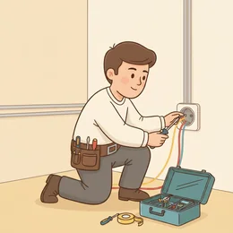

Eine Störung aufnehmen, dem Kunden erklären, was zu tun ist, sicher arbeiten.
Schau dir das Bild an
Zuerst nur schauen und beschreiben — die Wörter kommen gleich danach.

🗣️ Zum Einstieg – sprecht reihum: Beschreibt das Bild. Nutzt: „Auf dem Bild sehe ich …“, „Die Person …“, „Im Hintergrund ist …“
Erste Fragen
Woran arbeitet die Person auf dem Bild?
Was prüfst du, bevor du anfängst?
Wie erklärst du einem Kunden ein Problem ohne Fachwörter?
Wortschatz
Tipp auf 🔊, um das Wort zu hören. Lies den Satz darunter laut.
die Leitung
Kabel oder Rohr in der Wand.
die Steckdose
Dort steckst du den Stecker hinein.
der Sicherungskasten
Der Kasten mit den Sicherungen.
spannungsfrei
Es fließt kein Strom mehr.
das Kabel
Der Draht mit Kunststoff außen.
der Kurzschluss
Zwei Drähte berühren sich, der Strom fällt aus.
die Heizung
Macht die Wohnung warm.
das Ventil
Kleiner Hahn, der öffnet und schließt.
die Dichtung
Gummi oder Ring, damit nichts ausläuft.
der Abfluss
Das Rohr, durch das Wasser wegläuft.
der Druck
Wie stark Wasser oder Luft drückt.
die Wartung
Regelmäßiges Prüfen, damit nichts kaputtgeht.
entlüften
Luft aus der Heizung lassen.
die Störung
„Beim Internet gibt es gerade eine Störung.“
Beispieldialoge
Lest zu zweit mit verteilten Rollen — dann spielt es mit euren eigenen Worten nach.
💬 Elektriker anrufen · A2–B1
In deiner Küche geht ständig die Sicherung raus. Du rufst bei einer Elektrofirma an.
A
Elektro Krause, guten Tag.
B
Guten Tag. Bei mir fliegt in der Küche immer die Sicherung raus, wenn ich den Backofen anmache.
A
Klingt nach einem Kurzschluss im Herdanschluss. Wohnen Sie zur Miete oder im Eigentum?
B
Zur Miete. Muss ich das selbst bezahlen oder geht das an die Hausverwaltung?
A
Rufen Sie am besten die Verwaltung an. Ohne Auftrag von denen stelle ich Ihnen die Rechnung.
B
Die Verwaltung erreiche ich erst Montag. Können Sie trotzdem schon einen Termin reservieren?
A
Ich trage Sie mal für Dienstag um zehn ein. Wenn die Verwaltung bis dahin zusagt, ist alles gut.
B
Dienstag zehn Uhr passt. Ich gebe Ihnen meine Handynummer, falls sich etwas ändert.
🗣️ Sätze, die immer passen
Guten Tag, bei mir …Das Problem ist, dass …Es passiert immer, wenn …Ich wohne zur Miete.Wer bezahlt das normalerweise?Brauche ich vorher eine Zusage?Das Problem ist, dass ich … erst … erreiche.Können Sie trotzdem …Was kostet denn ein Notfalleinsatz?Dienstag passt gut.
🎭 Jetzt ihr: Spielt einen eigenen Dialog zum Thema — eine Person fragt, die andere antwortet.
Debatte: Reparieren oder gleich austauschen?
Teilt euch in zwei Gruppen. Jede Seite hat drei Argumente — sucht euch eins aus und verteidigt es.
✓ Reparieren
Ein Ersatzteil ist billiger als ein neues Gerät.
Es entsteht weniger Müll.
Die alte Anlage kennt man in- und auswendig.
✓ Austauschen
Neue Geräte verbrauchen deutlich weniger.
Bei alten Anlagen kommt bald das nächste Teil.
Für Ersatzteile gibt es oft keine Garantie mehr.
🗣️ Redemittel für die Debatte — bau diese Sätze ein:
Ich finde, dass …Ein Vorteil ist …Ein Nachteil ist …Meiner Meinung nach …Das stimmt, aber …Ich sehe das anders.Ich stimme dir zu.
🏁 Abschluss: Jede Gruppe nennt ihr bestes Argument. Danach sagt jeder einen eigenen Satz dazu.
Frei sprechen
Drei Aufträge. Nimm dir einen, sprich eine Minute — dann tauscht ihr.
📋 Leitfaden — sprich über diese Punkte:
Nimm eine Störung auf: seit wann, wie oft, was hat der Kunde schon versucht?
Erklär, warum du heute nicht fertig wirst.
Sag, welches Ersatzteil du brauchst und wie lange es dauert.
👥 Zu zweit · ⏱️ ca. 10 Minuten: Erst zu zweit sprechen, danach berichtet ihr der Gruppe kurz davon.
⏱️ 90-Sekunden-Challenge
Erzähle von einem Einsatz, der anders lief als geplant. Ein Wort, neunzig Sekunden, keine Pause. Die Hilfswörter sind dein Netz.
die Leitung
der Sicherungskastendie Wartungdie Störungder Kurzschlussdie Heizungdie Dichtung
1:30
✅ Üben
Ordne Wort und Bedeutung zu: Tipp links ein Wort an, dann rechts das, was dazugehört.